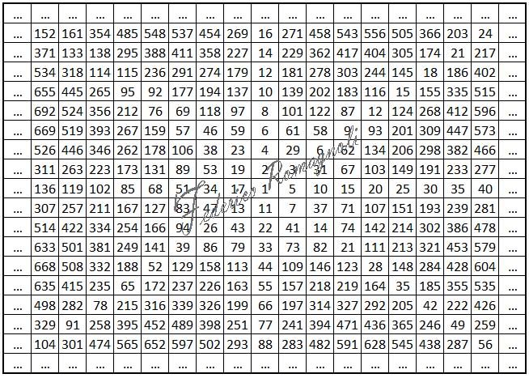

Activities
- Mathematics teaching
- Applied statistics and data analysis
- Number theory (prime numbers; Riemann hypothesis)
- Historiography and Frentani genealogy
- Digital documentary archives
- Utility model (no. 202023000005325, UIBM, 2026)
Profiles and identifiers
Persistent references for consulting activities and publications.
Publications and research contributions
Platforms for research materials and monographic works.
Documentary archives
Digital resources for preserving primary sources and materials supporting historical research.
Supplementary notes on number theory
Reflections and insights on the distribution of prime numbers supporting mathematical publications.